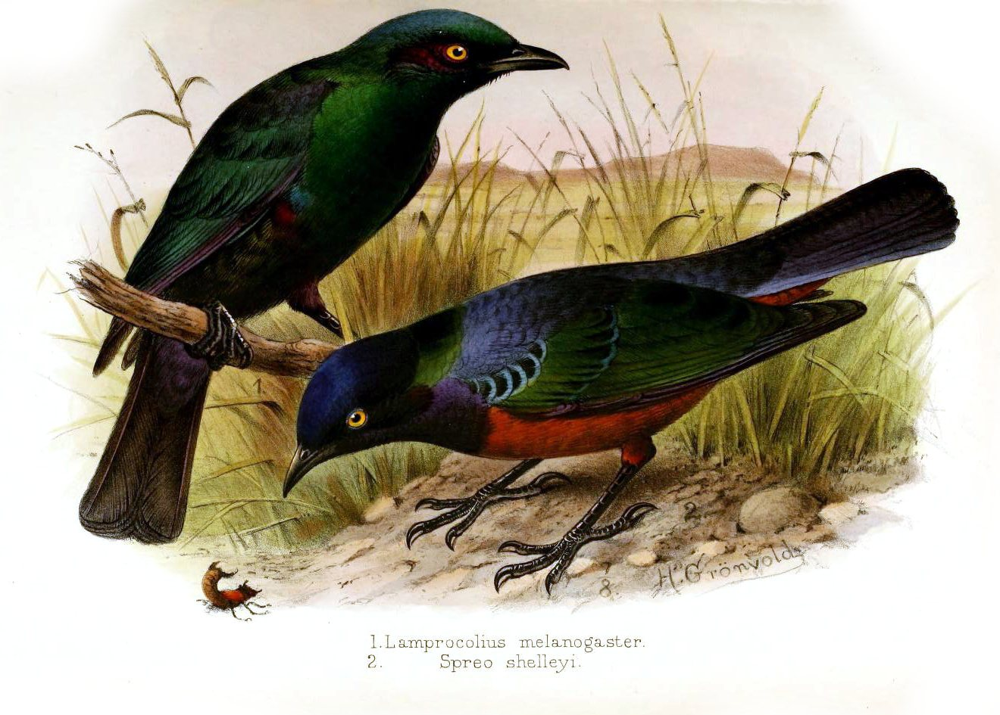

← Back to the list browserUGANDA / BIRDS / EXPLORER PREVIEWFOLLOW
FOLLOW
A BRANCH.
From a group to a name. Look closer at Uganda’s birds.
Loading the bird catalogue…

EXPLORE RECORDED CLASSIFICATION
Open a branch. Follow its connections.
Drag to move · + / − to zoom · Click a branch to open it
Connected branches show the classification recorded in this catalogue. Branch lengths do not represent evolutionary time or genetic distance.